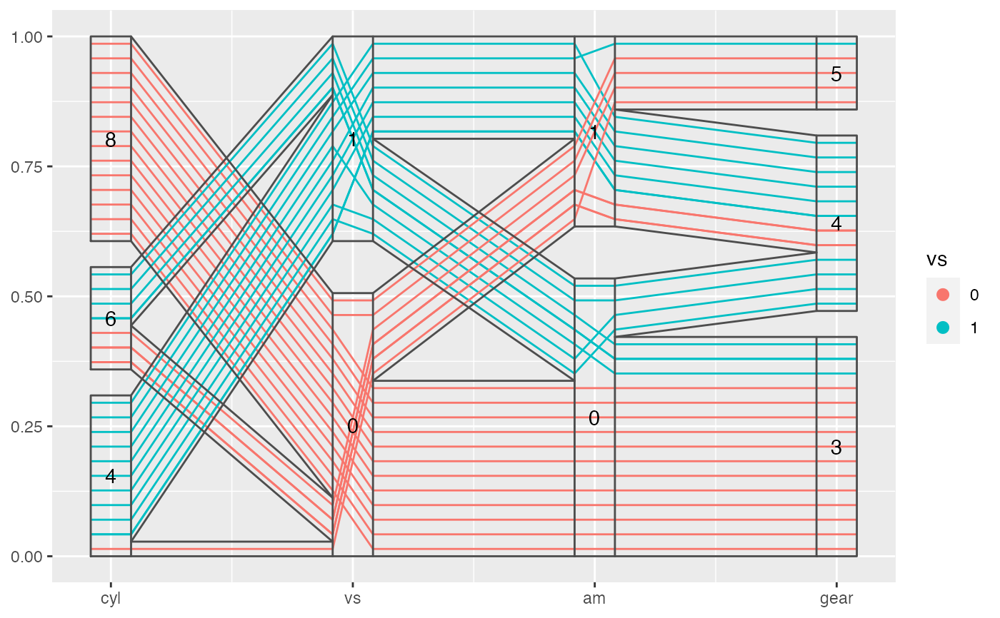

geom_pcp_text.RdTo add texts and labels in boxes showing the levels in each factor variable
geom_pcp_label( mapping = NULL, data = NULL, stat = "pcpbox", position = "identity", ..., freespace = 0.1, boxwidth = 0, rugwidth = 0, interwidth = 1, reverse = FALSE, parse = FALSE, nudge_x = 0, nudge_y = 0, label.padding = unit(0.25, "lines"), label.r = unit(0.15, "lines"), label.size = 0.25, na.rm = FALSE, show.legend = NA, inherit.aes = TRUE ) geom_pcp_text( mapping = NULL, data = NULL, stat = "pcpbox", position = "identity", ..., freespace = 0.1, boxwidth = 0, rugwidth = 0, interwidth = 1, reverse = FALSE, parse = FALSE, nudge_x = 0, nudge_y = 0, check_overlap = FALSE, na.rm = FALSE, show.legend = NA, inherit.aes = TRUE )
| mapping | Set of aesthetic mappings created by [aes()] or [aes_()]. If specified and `inherit.aes = TRUE` (the default), it is combined with the default mapping at the top level of the plot. You must supply `mapping` if there is no plot mapping. |
|---|---|
| data | The data to be displayed in this layer. There are three options: If `NULL`, the default, the data is inherited from the plot data as specified in the call to [ggplot()]. A `data.frame`, or other object, will override the plot data. All objects will be fortified to produce a data frame. See [fortify()] for which variables will be created. A `function` will be called with a single argument, the plot data. The return value must be a `data.frame`, and will be used as the layer data. |
| stat | The statistical transformation to use on the data for this layer, as a string. |
| position | Position adjustment, either as a string, or the result of a call to a position adjustment function. |
| ... | Other arguments passed on to [layer()]. These are often aesthetics, used to set an aesthetic to a fixed value, like `colour = "red"` or `size = 3`. They may also be parameters to the paired geom/stat. |
| freespace | A number in 0 to 1 (excluded). The total gap space among levels within each factor variable |
| boxwidth | A number or a numeric vector (length equal to the number of factor variables) for the widths of the boxes for each factor variable |
| rugwidth | A number or a numeric vector (length equal to the number of numeric variables) for the widths of the rugs for numeric variable |
| interwidth | A number or a numeric vector (length equal to the number of variables minus 1) for the width for the lines between every neighboring variables, either a scalar or a vector. |
| reverse | reverse the plot, useful especially when you want to reverse the structure in factor blocks, i.e. to become more ordered from right to left |
| parse | If `TRUE`, the labels will be parsed into expressions and displayed as described in `?plotmath`. |
| nudge_x, nudge_y | Horizontal and vertical adjustment to nudge labels by. Useful for offsetting text from points, particularly on discrete scales. |
| label.padding | Amount of padding around label. Defaults to 0.25 lines. |
| label.r | Radius of rounded corners. Defaults to 0.15 lines. |
| label.size | Size of label border, in mm. |
| na.rm | If `FALSE`, the default, missing values are removed with a warning. If `TRUE`, missing values are silently removed. |
| show.legend | logical. Should this layer be included in the legends? `NA`, the default, includes if any aesthetics are mapped. `FALSE` never includes, and `TRUE` always includes. It can also be a named logical vector to finely select the aesthetics to display. |
| inherit.aes | If `FALSE`, overrides the default aesthetics, rather than combining with them. This is most useful for helper functions that define both data and aesthetics and shouldn't inherit behaviour from the default plot specification, e.g. [borders()]. |
| check_overlap | If `TRUE`, text that overlaps previous text in the same layer will not be plotted. |
library(ggplot2) library(dplyr) data(mtcars) mtcars %>% mutate(cyl = factor(cyl), vs = factor(vs), am = factor(am), gear = factor(gear)) %>% ggplot(aes(vars = vars(cyl, vs:gear))) + geom_pcp(aes(color = vs), boxwidth = 0.2, resort = 2:3) + geom_pcp_box(boxwidth = 0.2) + geom_pcp_band(boxwidth = 0.2, resort = 2:3) + geom_pcp_text(boxwidth = 0.2)